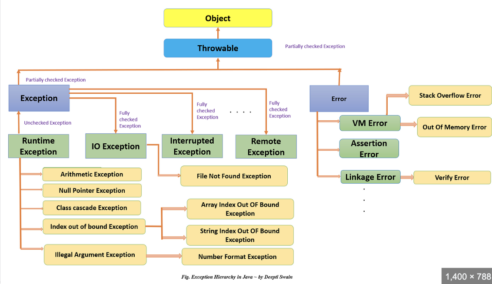

definitioncondition which cause program to stop and exit abnormally is called exceptionto stop this and handle the exception so that program terminates normally we use exception handling
{
int i = 0;
|
|  |
try catch finallyadd code which can give exception in try block, when exception will occur, control will shift to catch block, rest of the try block after exception will not executewrite your code in catch block which you want to execute in case exception occurs, once catch is executed control will return to first statement after catch write your code in finally block, which you want to execute when exception is there or no exception. finally will execute even when there is no exception, so here you can write your logic which you want to execute in every case finally will either execute just after try or just after catch
try{}
|
|
normal try block can not come alone, it can come either with catch or finally catch and finally can not come alone, try-catch, try-finally, try-catch-finally is one block so {} are also mandatory in try catch finally |
multiple catchmultiple catch blocks can be there to handle different exception, same exception two catch block are not allowedwhen exception occurs in try, control will come out, check the first catch if handling the exception, if not it will go to second catch and so on until it finds the same or parent excepotion catch
try{}
if parent exception and child exception are there in catch, parent must come after child, otherwise child wont execute at all so compile time error |
default exception handlerwhen an exception occurs, exception object is created and given to JVM, JVM will see if it is being handled by the methodwhich caused exception if not, it will go to the caller of the method and see if the caller is handling the exception if no one is handling it, JVM will give it to default exception handler wchich cause the program to terminate abnormally with exception details |
Checked, unchecked and fully checked exception
Any exception which is checked by compiler to certain that it must be handled is checkede.g. FileNotFound, these are some mandatory things which compiler consider that it must be handled any exception which is not checked by compiler, means compiler wont give any error if it is handled or not is unchecked in java RunTimeException and its subclasses(AE, NPE, CCE) and Error and its subclasses(VME, SOFE, ME) are unchecked rest all are checked any class which is checked and all of its subclasses are also checked is called fully checked any class which is checked but its subclasses are unchecked is partially checked to catch a fully checked exception it must be thrown in try block we must handle the checked exception either using try-catch or using throws we should handle unchecked exception, as from compiler side there is no error to catch a partially checked or unchecked exception it may or may not be thrown in try block only exception and throwable are partially checked exception classes
|
throw
you can explicitly throw an exception using throw key work
throw new NPE("my NPE Exception");
you can not write any statement after throw as that will be out of reach |
throws
if an exception is there, you can either handle it using try catch or delicate it to caller using throwsthe caller then have to handle it or it can also delicate to its caller using throws you can use multiple exceptions using , in throws, should not use related exceptions you can use throws same or parent exception if a method is throwin any exception in case of overriding, the child class method if throws checked exception, parent must throws same or its parent
public static void main(String[] args) throws FileNotFoundException, InterruptedException {
|
You can create your own exception by implmenting/extending any of the exception hierarchy class
e.g. if you extent Runtimeexception, your class will be unchecked, if you extends Exception class, your class with be checked exception
class InsufficentFundException extends RuntimeException{
|
1. using printstacktrace
this method is to print the exception information on output console |
nested try catchin nested try catch, you can have same catch same exception for inner and outer try as both belongs to different try if exception is not handled by inner catch, then it will be checked if outer catch can handle it or not |
|
|
|
| Before 1.7 we explicitly hve to close resources by writing finally block, but from 1.7 try with resource autoclose them |
| Using try with resources make the code more readable, and we have to write less code, no burden of closing the resources as they will be closed by JVM |
| You can only declare and initialize the resource inside try only from 1.7, but from 1.9 you can declare them out side and use reference in try block |
| you can use multiple resource in try by separating them with ; |
| resources created in try are by default final so that we can not change them further |
| resource created can only be closed automatically if they are autoclosable, means they are implementing autoclosable interface |
| try can come alone without catch/finally if using try with resource |
| resource inside trywithresource are closed automatically once try block reaches its end |
|
from 1.7 version 1. try with resource using single resource
try (FileInputStream fis = new FileInputStream("asd.a")) {
|
|
from 1.7 version 2. try with resource using multiple resource
try (FileInputStream fis = new FileInputStream("asd.a");
|
|
from 1.9 version 3. try with resource using multiple resource and using reference only in try
FileOutputStream fos = new FileOutputStream("abc.txt")
|
|
resorces declared inside try resource are final
try (FileInputStream fis = new FileInputStream("asd.a"))
|
|
before 1.7 version
FileInputStream fis = null;
|
|
| Separate exception using | and multiple exception can be handled in same catch block |
| this is helpful where the handling code is same for different exception, code reduandncy is reduced as not need to write same code in multiple catch blocks |
| the exception class in a single catch should not be related with each other, as e.g. if parent child are there then there is no need for child as parent itself will handle child exception also, so the classes should not be related |
|
this will handle both arithmetic and null pointer exception
catch (ArithmeticException | NullPointerException e1)
|
|
below is not allowed as Exception is parent of ArithmeticException and it can handle ArithmeticException itself, related classes not allowed catch (ArithmeticException | Exception e1)
|
1. Try resource can come alone, normal try must come with catch or finally
|